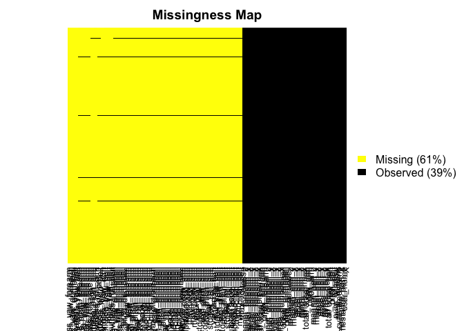

This document was created as the final project for the course Practical Machine Learning by Johns Hopkins University at Coursera.
Using devices such as Jawbone Up, Nike FuelBand, and Fitbit it is now possible to collect a large amount of data about personal activity relatively inexpensively. These type of devices are part of the quantified self movement – a group of enthusiasts who take measurements about themselves regularly to improve their health, to find patterns in their behavior, or because they are tech geeks. One thing that people regularly do is quantify how much of a particular activity they do, but they rarely quantify how well they do it. In this project, your goal will be to use data from accelerometers on the belt, forearm, arm, and dumbell of 6 participants. They were asked to perform barbell lifts correctly and incorrectly in 5 different ways. More information is available from the website here: http://groupware.les.inf.puc-rio.br/har (see the section on the Weight Lifting Exercise Dataset).
The data set for this project are available here:
https://d396qusza40orc.cloudfront.net/predmachlearn/pml-training.csv
The goal of this project is to predict the manner in which they did the exercise. This is the “classe” variable in the training set. You may use any of the other variables to predict with. You should create a report describing how you built your model, how you used cross validation, what you think the expected out of sample error is, and why you made the choices you did.
data <- read.csv("pml-training.csv", na.strings=c("NA","#DIV/0!",""))The original dataset structure reveals that there are 19622 observations with 160 variables. Is important to notice that there are several records that contains NA values, in next step we are going to clean up the dataset in order to get it tidy.
dim(data)## [1] 19622 160missmap(data,col=c('yellow','black'),y.at=1,y.labels='',legend=TRUE)
There are two main transformations needed for the dataset, the first one is to remove those variables (features) that have many NA, how many? I decided that more than 20% of NAs affects the relationship of the feature with the final variable. The second transformation is about those features that are not contributing to the prediction, in this case the first seven.
data_rows = dim(data)[1]
max_na_rows = data_rows * .2
#Cols to remove that contains lots of NAs
cols_to_remove <- which(colSums(is.na(data) | data=="") > max_na_rows)
data_clean <- data[,-cols_to_remove]
#Removing the first 7 cols
data_clean <- data_clean[,-c(1:7)]
dim(data_clean)## [1] 19622 53Finally we have reduce from 160 to 53 variables, getting out a tidy dataset.
The variable to predict classe is a factor with 5 posible outputs A, B, C, D or E, this give us the direction that we are dealing with a classification problem so the first effort will be to use a Tree. The partitioning strategy is to take 75% for training set and 25% for testing.
#seed set for reproducibility
set.seed(2018)
inTrain <- createDataPartition(data_clean$classe, p = 0.75, list = F)
training <- data_clean[inTrain,]
testing <- data_clean[-inTrain,]
dim(training)## [1] 14718 53dim(testing)## [1] 4904 53#model creation
model_rpart <- train(classe ~ ., method="rpart", data = training)
#tree model graphic representation
par(mfrow=c(1,1))
prp(model_rpart$finalModel, type = 2, nn=T,
fallen.leaves = T, faclen = 4,
varlen = 8, shadow.col = "gray")pred_rpart <- predict(model_rpart, testing)
#confusion matrix with testing dataset
confusionMatrix(testing$classe, pred_rpart)## Confusion Matrix and Statistics
##
## Reference
## Prediction A B C D E
## A 848 143 306 93 5
## B 149 563 204 33 0
## C 35 44 662 114 0
## D 48 113 429 214 0
## E 13 214 222 49 403
##
## Overall Statistics
##
## Accuracy : 0.5485
## 95% CI : (0.5345, 0.5625)
## No Information Rate : 0.3717
## P-Value [Acc > NIR] : < 2.2e-16
##
## Kappa : 0.4337
## Mcnemar's Test P-Value : < 2.2e-16
##
## Statistics by Class:
##
## Class: A Class: B Class: C Class: D Class: E
## Sensitivity 0.7758 0.5227 0.3631 0.42545 0.98775
## Specificity 0.8565 0.8991 0.9374 0.86594 0.88923
## Pos Pred Value 0.6079 0.5933 0.7743 0.26617 0.44728
## Neg Pred Value 0.9302 0.8700 0.7133 0.92951 0.99875
## Prevalence 0.2229 0.2196 0.3717 0.10257 0.08320
## Detection Rate 0.1729 0.1148 0.1350 0.04364 0.08218
## Detection Prevalence 0.2845 0.1935 0.1743 0.16395 0.18373
## Balanced Accuracy 0.8162 0.7109 0.6502 0.64569 0.93849Our tree model confusion matrix reveals that the accuracy achieved by this model is just 54% a little more that random coin flip, so next step is to use Random Forest to find a better model, here we will consider 5-fold cross validation strategy by passing the right parameters to the caret train function, 300 trees will be used.
#second model creation using random forest, cross validation 5-fold and 300 trees
model_rf <- train(classe ~ .,
data = training,
method = "rf",
trControl = trainControl(method = "cv", 5),
ntree = 300)
pred_rf <- predict(model_rf, testing)
#confusion matrix with testing dataset
confusionMatrix(testing$classe, pred_rf)## Confusion Matrix and Statistics
##
## Reference
## Prediction A B C D E
## A 1392 3 0 0 0
## B 10 939 0 0 0
## C 0 3 851 1 0
## D 0 0 10 794 0
## E 0 2 1 2 896
##
## Overall Statistics
##
## Accuracy : 0.9935
## 95% CI : (0.9908, 0.9955)
## No Information Rate : 0.2859
## P-Value [Acc > NIR] : < 2.2e-16
##
## Kappa : 0.9917
## Mcnemar's Test P-Value : NA
##
## Statistics by Class:
##
## Class: A Class: B Class: C Class: D Class: E
## Sensitivity 0.9929 0.9916 0.9872 0.9962 1.0000
## Specificity 0.9991 0.9975 0.9990 0.9976 0.9988
## Pos Pred Value 0.9978 0.9895 0.9953 0.9876 0.9945
## Neg Pred Value 0.9972 0.9980 0.9973 0.9993 1.0000
## Prevalence 0.2859 0.1931 0.1758 0.1625 0.1827
## Detection Rate 0.2838 0.1915 0.1735 0.1619 0.1827
## Detection Prevalence 0.2845 0.1935 0.1743 0.1639 0.1837
## Balanced Accuracy 0.9960 0.9945 0.9931 0.9969 0.9994model_rf## Random Forest
##
## 14718 samples
## 52 predictor
## 5 classes: 'A', 'B', 'C', 'D', 'E'
##
## No pre-processing
## Resampling: Cross-Validated (5 fold)
## Summary of sample sizes: 11773, 11775, 11775, 11774, 11775
## Resampling results across tuning parameters:
##
## mtry Accuracy Kappa
## 2 0.9917111 0.9895141
## 27 0.9918470 0.9896865
## 52 0.9889255 0.9859914
##
## Accuracy was used to select the optimal model using the largest value.
## The final value used for the model was mtry = 27.The model generated by Random Forest according to the confusion matrix achieved an accuracy of 0.9935 a way better than our tree model, the expected error is less than 1%, cross validation with 5 fold looks like is good enought, the value used for the final model was mtry = 27 with an accuracy of 0.9918. As final note we can say that in this case Random Forest generated the best model, also the computing time to get it was longer than the needed for the tree model. ```